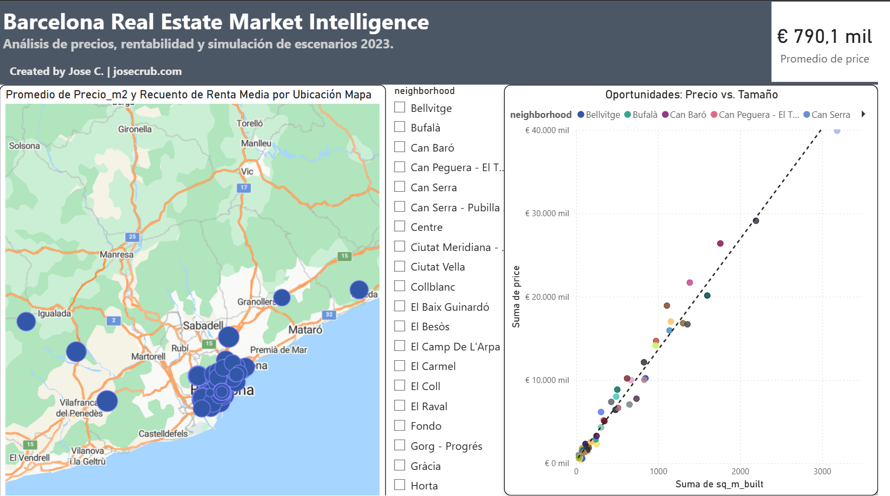
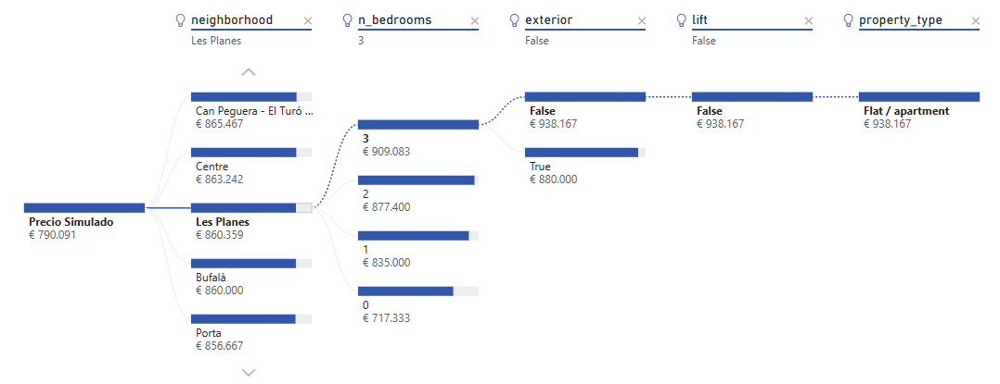

A business intelligence system that analyses more than 10,000 properties in Barcelona to identify investment opportunities through predictive modelling and multivariate analysis. Two complementary views: market exploration and AI-powered financial simulation.


The embedded dashboard requires Power BI authentication. For the full experience,
download the .pbix file and open it with
Power BI Desktop (free):
you'll get every visual, filter and AI feature with no restrictions.
The quantitative analysis reveals non-obvious structural patterns that redefine the traditional valuation criteria in the Barcelona market:
In premium districts (Eixample, Sant Gervasi), an outward-facing aspect weighs more on price (β=0.34) than the number of bedrooms (β=0.21). A 2-bedroom flat with the best orientation is valued +12 % above an inward-facing 3-bedroom one. Implication: prioritise natural light over gross floor area in premium investment.
0-bedroom properties (studios/lofts) show the highest price per m² in the market (€5,200 on average) with an accessible entry point. Projected annualised ROI of 7.2 % versus 4.8 % for conventional types, linked to short-term rentals in Ciutat Vella and Gràcia.
The scenario simulator (±10 % valuation) shows that established neighbourhoods (Les Corts, Sarrià) have 40 % lower price volatility than emerging areas (Poblenou, Besòs): coefficient of variation 0.18 vs 0.31. A clear geographic criterion for conservative risk profiles.